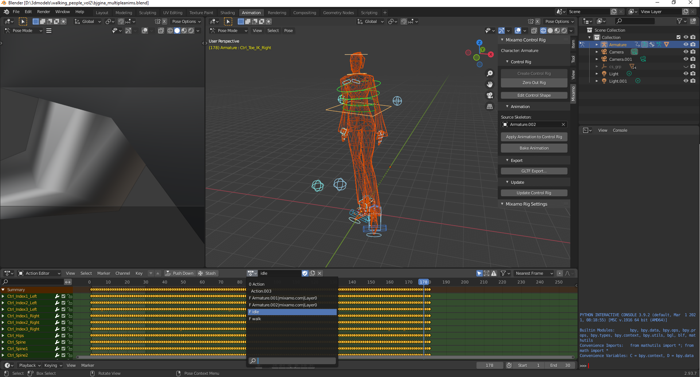

Now that I have a homebrew-enabled wii, let's write some code for it :)

Now that I have a homebrew-enabled wii, let's write some code for it :)
The wiibrew website has basically all of the information necessary to get started: https://wiibrew.org/wiki/Main_Page. The SDK is called devkitPro, and it also provides libraries for the GBA, Nintendo DS, GameCube, and a couple of other platforms.
A binary installation of the sdk is done via a custom pacman package manager: https://devkitpro.org/wiki/Getting_Started. After the custom pacman is installed, simply run:
sudo dkp-pacman -S wii-dev
To test the code on PC, the dolphin emulator seems to be the most popular: https://www.linux.org/threads/dolphin-%E2%80%93-wii-emulator-even-the-newest-versions-of-ubuntu.37798/
sudo apt-add-repository ppa:dolphin-emu/ppa
sudo apt install dolphin-emu
Looking at the included examples in /opt/devkitpro/examples/wii/graphics/gx/neheGX (which are Wii versions of the famous now legacy NeHe OpenGL tutorials), the programs are very OpenGL 1-2 like, with the fixed-function pipeline (no shaders). Some example code for drawing a triangle:
GX_Begin(GX_TRIANGLES, GX_VTXFMT0, 3);
GX_Position3f32( 0.0f, 1.0f, 0.0f); // Top
GX_Color3f32(1.0f,0.0f,0.0f); // Set The Color To Red
GX_Position3f32(-1.0f,-1.0f, 0.0f); // Bottom Left
GX_Color3f32(0.0f,1.0f,0.0f); // Set The Color To Green
GX_Position3f32( 1.0f,-1.0f, 0.0f); // Bottom Right
GX_Color3f32(0.0f,0.0f,1.0f); // Set The Color To Blue
GX_End();
I've been working on getting an IQM animated model working.This is since I've been working with raylib recently, which uses the IQM format. I ported the iqm github example which shows animates a single simple IQM model.
I was having trouble using the devktPro libogc math library to properly animate the IQM. Using the github IQM example geom math library, the animation worked no problem. I ended up starting my own math library, initially in C++, to debug the issue. Once that worked, I added back in the optimized libogc math functions within the math library.
The two important notes are that the libogc matrices are row-major (as opposed to column major in OpenGL), and most of the math functions work with 3x4 matrices instead of 4x4. Luckily, you can simply cast the 4x4 matrices as 3x4 and they still work properly. The math library is here, and I figure I can add implementations for other consoles since I already have alot of math code (for example for the ps2, ps3).
Said math library is added as a submodule to the main code, which can be found here
And, surprisingly, it works on hardware the first try!
Added third person camera controller and custom IQM model, as well as a textured tile floor. TODO is to add more animations to the character (e.g. an idle anim).
Iqm format models can be exported from blender via the plugin from the github IQM link (see my raylib experiments page). For getting an animated model, I found this video and this video introducing me to mixamo, owned by adobe. It contains a good amount of 3d models and a ton of animations that you can apply to any character model! You just upload the model and select the location of each of the joints. I singled out a character from this model pack, uploaded it to mixamo to give it a walking animation (the source file was a .max, so I opened it in 3ds max and exported it but had trouble exporting the animations properly), then loaded it and exported it from blender as an IQM model.
Added the idle animation and code to switch between idle/walk. The IQM exporter combines the animations into a single one by appending their frames to the first anim. So, in this model's case, frames 0-180 are for idle, and 181-211 are the walk cycle. The code to handle this looks like:
IqmMesh::Anim idleAnim = { 0, 180, "idle" };
IqmMesh::Anim walkAnim = { 181, 181+30-1, "walk" };
...
void Update(const float dt)
{
animCounter += dt;
while ((int)animCounter > mEndFrame) { animCounter -= (mEndFrame - mStartFrame); }
animateiqm(animCounter);
}
void AddAnim(const Anim& anim) {
mAnims.push_back(anim);
}
void SetAnim(const std::string& name)
{
for (Anim& anim : mAnims)
{
if (anim.name == name) {
// only reset anim if not already set
if (mStartFrame != anim.startFrame ||
mEndFrame != anim.endFrame)
{
mStartFrame = anim.startFrame;
mEndFrame = anim.endFrame;
animCounter = mStartFrame;
}
break;
}
}
}While in blender, each animation is stored in an "action":
And now the character switches between idle/walk:
Added world coordinates to screen coordinates calculation. The idea is I'll be able to point and click/shoot 3d objects in the scene with the 2d wiimote coords. The calculation was adapted from the raylib source code GetWorldToScreen function. It wasn't working for me at first until I remembered the matrix multiply overload I added only computes the 3x4 portion of the matrix, not the 4x4. So the fourth row needed to be calculated manually in order to get a correct w component for perspective division. The resulting function is:
inline Vec2 WorldToScreenCoords(Vec3& pos, Mat4& viewMat, Mat4& projMat, int scrWidth, int scrHeight) {
Mat4 viewProj = projMat * viewMat;
// the 4th row is not calculated by projMat*viewMat (only does 3x4)
viewProj.r3c0 = projMat(3,0)*viewMat(0,0) + projMat(3,1)*viewMat(1,0) + projMat(3,2)*viewMat(2,0) + projMat(3,3)*viewMat(3,0);
viewProj.r3c1 = projMat(3,0)*viewMat(0,1) + projMat(3,1)*viewMat(1,1) + projMat(3,2)*viewMat(2,1) + projMat(3,3)*viewMat(3,1);
viewProj.r3c2 = projMat(3,0)*viewMat(0,2) + projMat(3,1)*viewMat(1,2) + projMat(3,2)*viewMat(2,2) + projMat(3,3)*viewMat(3,2);
viewProj.r3c3 = projMat(3,0)*viewMat(0,3) + projMat(3,1)*viewMat(1,3) + projMat(3,2)*viewMat(2,3) + projMat(3,3)*viewMat(3,3);
// we want to calculate and include the w coord
Vec4 worldPos = viewProj * Vec4(pos, 1.0f);
float w = worldPos.w;
if (fabsf(w) > 0.00001f) {
w = 1.0f / w;
}
// normalized device coordinates (inverted y)
Vec3 ndcPos(worldPos.x * w, -worldPos.y * w, worldPos.z * w);
// 2d screen pos
return Vec2(
(ndcPos.x + 1.0f) / 2.0f * ((float)scrWidth),
(ndcPos.y + 1.0f) / 2.0f * ((float)scrHeight)
);
}
I tested the calculation on the player position, which is the bottom of the model's feet. So, 320,433 seems like a reasonable screen position (the screen resolution is about 640x480) and thus I think it's working.
Also added OGG music and got printf working (needed to add a call to console_init()). It only draws to one of the framebuffers so it constanly flickers; I tried setting it to a different framebuffer each frame but that resulted in a black screen. The Music class just wraps the OGG streaming example; currently the OGG file needs to be completely stored in memory.
Added 2D sprite drawing and transparency. First, to draw the sprite, I had the renderer use an ortho projection matrix that was an identity matrix, so I can directly set NDC coordinates of the sprite (-1,+1) , converting from screen pixel coordinates. Orthographic was required because using perspective mode, having the sprite quad vertex buffer have a z coordinate of 0 wasn't showing up:
// for drawing from the top left
float vertices[6*5] = {
// position texcoord
0.0f, -1.0f, 0.0f, 0.0f, 0.0f, // bottom left
1.0f, -1.0f, 0.0f, 1.0f, 0.0f, // bottom right
0.0f, 0.0f, 0.0f, 0.0f, 1.0f, // top left
1.0f, -1.0f, 0.0f, 1.0f, 0.0f, // bottom right
1.0f, 0.0f, 0.0f, 1.0f, 1.0f, // top right
0.0f, 0.0f, 0.0f, 0.0f, 1.0f // top left
};
sVertBuf.Init(
vertices,
6*5,
nullptr,
0,
5 // floats per vertex
);
...
GX_LoadProjectionMtx((f32(*)[4])projMat->v, GX_ORTHOGRAPHIC);
To draw the sprite, the converted NDC coordinates and sprite size are put into a model matrix. Additionally, depth testing is disabled because otherwise, the sprite shows up behind all of the 3d objects:
void Sprite::Draw(Renderer& render)
{
GameMath::Mat4 modelMat = mTransMat * mScaleMat;
render.SetTexture(*mTexture);
render.DisableDepthTest();
// viewmat == projmat == identity
render.DrawVertexBuffer(modelMat, sViewProjMat, sVertBuf, &sViewProjMat);
render.EnableDepthTest();
}
void Sprite::SetDrawSize(int width, int height)
{
float scaleX = pixWidthToNDCCoord(width);
float scaleY = pixHeightToNDCCoord(height);
mScaleMat = GameMath::Scale(scaleX, scaleY, 1.0f);
}
void Sprite::SetPosition(int x, int y)
{
mX = x;
mY = y;
float posX = xPixelToNDCCoord(mX);
float posY = yPixelToNDCCoord(mY);
mTransMat = GameMath::Translate(posX, posY, 0.0f);
}
Additionally, to get transparency working, blending needed to be enabled:
GX_SetTevOp(GX_TEVSTAGE0, GX_BLEND);
GX_SetTevOrder(GX_TEVSTAGE0, GX_TEXCOORD0, GX_TEXMAP0, GX_COLOR0A0);
...
// flip framebuffer
mFbIndex ^= 1;
GX_SetZMode(GX_TRUE, GX_LEQUAL, GX_TRUE);
GX_SetBlendMode(GX_BM_BLEND, GX_BL_SRCALPHA, GX_BL_INVSRCALPHA, GX_LO_SET);
GX_SetColorUpdate(GX_TRUE);
GX_SetAlphaUpdate(GX_TRUE);
GX_CopyDisp(mFrameBuffer[mFbIndex], GX_TRUE);
Below shows before/after disabling the depth test: